Finatext Tech Blogのフィード
https://zenn.dev/p/finatext
『金融を"サービス"として再発明する』Finatextグループのテックブログです。
フィード
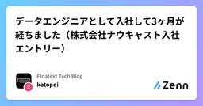
データエンジニアとして入社して3ヶ月が経ちました（株式会社ナウキャスト入社エントリー） 1
1
Finatext Tech Blogのフィード
この記事は、Finatextグループ Advent Calendar 2024 の19日目の記事です。 はじめにはじめまして、株式会社ナウキャストでデータエンジニアをしております加藤です。企業のアドベントカレンダーに参加するのは初めてなので、何を書こうかと悩みましたが、10月に入社してちょうど3ヶ月が経過しようとしているので、入社エントリーを書きたいと思います。稚拙な内容ではございますが、お付き合いくださいませ。 これまでの経歴私は大学で歴史を勉強していたため、文系人間ではありましたが、28歳になったタイミングで一念発起し、職業訓練校でJavaを4ヶ月間習い、その後なんと...
1日前
グループ会社 Teqnological の紹介
Finatext Tech Blogのフィード
この記事は、Finatextグループ Advent Calendar 2024 の18日目の記事です。 はじめにおはこんばんちは。Finatextのフィンテックソリューション事業でエンジニア/アーキテクトとして働いているryotaro9129です。普段はパートナー企業の皆様にWEBアプリケーション開発の支援や提案を行っています。Finatextグループは、約200のAWSアカウントを運用していたりと、スタートアップとしてはかなりの数のサービスを提供・支援しています。今日は、そんなFinatextグループのサービス開発を支えているグループ会社、Teqnologicalについてお話...
2日前
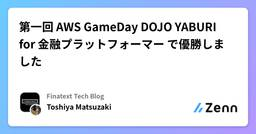
第一回 AWS GameDay DOJO YABURI for 金融プラットフォーマー で優勝しました
Finatext Tech Blogのフィード
この記事は、Finatextグループ Advent Calendar 2024の17日目の記事です。 はじめに初めまして、株式会社 Finatext で証券事業のエンジニアを務めている Toshiya Matsuzaki です。2024 Japan AWS Jr. Champions として選出され、AWS 関連でイベント参加や登壇等の活動を行っています。2024 年 10 月 25 日に開催された「AWS GameDay DOJO YABURI for 金融プラットフォーマー」に参加し、Finatext チームで見事優勝を果たしました。強力なメンバーのサポートを受けながら、初...
3日前
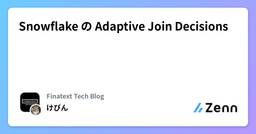
Snowflake の Adaptive Join Decisions
Finatext Tech Blogのフィード
この記事は、Snwoflake Advent Calendar 2024の16日目の記事です。 はじめにこんにちは！ナウキャストのデータエンジニアのけびんです。Snowflake は日々クエリ実行が早くなるようにさまざまな開発をしてくれています。最近新しいパフォーマンス機能である "Adaptive Join Decisions" がリリースされ、 9.5% もクエリパフォーマンスが改善されたそうです。ユーザーは自動的にこの恩恵を受けられます、嬉しいですね。https://www.snowflake.com/engineering-blog/query-acceleration...
4日前
Goのエラーについて
Finatext Tech Blogのフィード
Go のエラーに関しては、他の言語と少し考え方が異なっているので好き嫌いがある気がします。この記事では Go のエラーをどのように扱えば良いのか、何がベストなのか、何が NG なのかといったことについて述べたいと思います。ご意見やフィードバックをいただけますと嬉しいです！ Go のエラーの特徴Go の error はインターフェースであり、Error() string というメソッドさえあればどの型でもエラーとして扱うことができます。つまり、制限なしに使用できる第一級オブジェクト (first-class citizen) です。他の言語でいう Exception で...
4日前
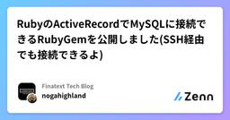
RubyのActiveRecordでMySQLに接続できるRubyGemを公開しました(SSH経由でも接続できるよ) 1
Finatext Tech Blogのフィード
この記事は、Finatextグループ Advent Calendar 2024の16日目の記事です。 はじめにこんにちは、Finatextのインシュアテック事業でバックエンドエンジニアをしている岸と申します。今回は、RubyのActiveRecordでMySQLにSSH接続できるRubyGemを作成しましたので、その紹介をさせていただきます。 TL;DRこちらのRubyGemを作ったのでぜひ使ってみてください！https://rubygems.org/gems/active_record_mysql_replGitHubのREADMEにはサンプルのDBやコマンドのショー...
4日前
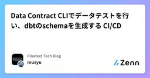
Data Contract CLIでデータテストを行い、dbtのschemaを生成する CI/CD
Finatext Tech Blogのフィード
この記事はdatatech-jp Advent Calendar 2024の15日目の記事です。 背景データのスキーマは様々な理由で変更されることがあり、データオーナー側はその変更の影響範囲を正確に把握することが難しいです。そのため、複数のデータオーナーと安全にソースデータを連携するために、新規ソースデータの連携方法を明確化する必要があります。近年、ソースデータのスキーマ情報の管理やソースデータ監視などの仕組みの必要性が重要視されてきています。そこでData Contractという概念を取り入れ、ソースデータのスキーマ情報の管理を行うことが最近のトレンドとなっています。Da...
5日前
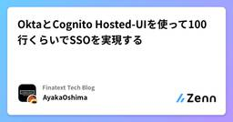
OktaとCognito Hosted-UIを使って100行くらいでSSOを実現する 1
Finatext Tech Blogのフィード
この記事は、Finatextグループ Advent Calendar 2024の15日目の記事です。 はじめにこんにちは。株式会社Finatextでアーキテクトをしている大島です。今回は、Okta[1]とAmazon Cognito[2] の Hosted UIを使用したSSO（シングルサインオン）というテーマで執筆しました。弊社では、社内で使用しているさまざまなツール（SlackやKiteRa、社内専用AIチャットボット「Alfred Chat」）を使用する際のSSOの手段として、Oktaを利用しています。近々新たに自社サービスで使用する管理画面を作成することになり、同様にO...
5日前
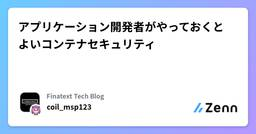
アプリケーション開発者がやっておくとよいコンテナセキュリティ
Finatext Tech Blogのフィード
この記事は、Finatextグループ Advent Calendar 2024の14日目の記事です。 本記事のスタンスアプリケーションの実装についてはやろうとしていることに対して、ある程度仕組みの部分から理解しているのが望ましいと思いますが、ことセキュリティについては一旦仕組みよりも対策を優先した方が良いと言うのが筆者の考えです。（そもそもセキュリティの勉強って後回しにされがち...。）なので、理屈はある程度置いておいて、じゃあどんなことをすればコンテナをもっとセキュアにできるのか？について勉強した結果を独断と偏見に基づいてこの記事では紹介していきます。 最低限抑えておきたいコ...
6日前
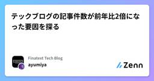
テックブログの記事件数が前年比2倍になった要因を探る 1
Finatext Tech Blogのフィード
この記事は 技術広報 Advent Calendar 2024 の14日目の記事です。 気づいたら前年比2倍こんにちは。『金融を”サービス”として再発明する』Finatextホールディングスの ayumiya といいます。Finatextグループの広報PRとして「hogehoge広報」と名のつく活動を一通り担当しており、特に技術広報には入社以来ずっと携わっています。先日テックブログの記事件数を集計していたら、今年2024年は昨年の倍になりそうなことに気づきました。そういえば、特に狙っていないのに5日連続で記事を公開できた週もありました。でも、今年は新たな勉強会シリーズを始めて...
6日前
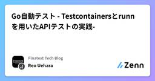
Go自動テスト - Testcontainersとrunn を用いたAPIテストの実践-
2
Finatext Tech Blogのフィード
この記事はGo Advent Calendar 2024の 14 日目の記事です🎄 はじめに先日、専用コンテナを利用したユニットテストのアプローチとして、Testcontainers for Goを利用した具体例を紹介させていただきました！https://zenn.dev/finatext/articles/finatext-advent-calendar-2024-testcontainers-goまだ読んでない人は、ぜひチェックといいねをよろしくお願いします 👍本記事では、Testcontainers と合わせて、runn を用いた API テスト基盤について詳しく解説し...
6日前
CloudWatch DashboardをTerraformでコード化した話 1
Finatext Tech Blogのフィード
この記事は terraform Advent Calendar 2024 14日目の記事です。 はじめにFinatextでインフラエンジニアをやっているぐらにゅです。AWSで利用しているリソースのメトリクスをダッシュボードでパッと見たくなったので、CloudWatch Dashboardを利用してダッシュボードの作成を行うことにしました。この時、「簡単にダッシュボードが作れるようになったら嬉しいよね」ということでTerraformでModuleを作ったのですが、色々と気づきがあったので今回記事にまとめました。 今回書くこと/書かないこと 今回書くことDashboar...
6日前
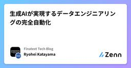
生成AIが実現するデータエンジニアリングの完全自動化
Finatext Tech Blogのフィード
この記事はFinatextグループ Advent Calendar 2024の13日目の記事です。 はじめにナウキャストで取締役をしている片山です。ナウキャストでは今年からデータ&AIソリューション事業を立ち上げています。データ&AIソリューション事業ではこれまでナウキャストが培ってきたデータエンジニアリングの知見を活かし、エンタープライズにおける生成AI時代のデータ基盤構築を支援しています。2022年にChatGPTが登場して以来、「エンジニアリングが自動化され、エンジニアが職を失う」と言われ続けています。20年後の世の中でAIが自律的に開発をしていること...
7日前
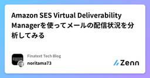
Amazon SES Virtual Deliverability Managerを使ってメールの配信状況を分析してみる
Finatext Tech Blogのフィード
この記事は、Finatextグループ Advent Calendar 2024の12日目の記事です。 はじめにFinatextでサーバーサイド・AWSエンジニアをしている @takuma5884rbbです。2022年11月にGAとなった[1]Amazon Simple Email Service（以降、Amazon SES） Virtual Deliverability Manager（以降、VDM）。メール送信にかかるドメイン認証の設定検証や、メール配信状況のモニタリングなどをしてくれる便利なサービスですが、あまり活用事例を見かけないので記事にしてみました。 閑話休題：背景...
8日前

dbt v1.9.0から使えるようになったmicrobatch incremental modelがとても良さそう
Finatext Tech Blogのフィード
この記事はFinatextグループ Advent Calendar 2024の11日目の記事です。 はじめに先日、dbt-core v1.9.0がリリースになり、新たに microbatch incremental modelが使えるようになりました。この機能は、特にサイズの大きな時系列データに対して有効で、これまでdelete+insertやappend strategyで工夫しながら大きなデータを運用してきたデータエンジニアにとって、コスト、パフォーマンス、運用の観点で非常に嬉しい機能となりそうです。ナウキャストでも、サイズの大きなデータの運用に頭を悩ませていたので、積極的に活...
9日前
Pydantic AI でエージェントを作ってみる
Finatext Tech Blogのフィード
この記事は、Finatextグループ Advent Calendar 2024の10日目の記事です。 はじめにこんにちは、ナウキャストでLLMエンジニアをしているRyotaroです。毎週生成 AI に関する情報をまとめていますが、今回はアドベントカレンダー期間ということで久々にテーマを一つに絞って書きたいと思います！そのテーマというのが、「Pydantic AI」です！最近 bolt とか replit とか AI エージェントを駆使したサービスがめちゃくちゃ流行っていますよね。そのエージェントを作るためのライブラリの一つとして Pydantic AI が最近出たみたいなの...
10日前
生成AI週報（10/28~11/03）
Finatext Tech Blogのフィード
こんにちは、ナウキャストでLLMエンジニアをしているRyotaroです。10/28~11/03で収集した生成AIに関連する情報をまとめています。※注意事項内容としては自分が前の週に収集した生成AIの記事やXでの投稿・論文が中心になるのと、自分のアンテナに引っかかった順なので、多少古い日付のものを紹介する場合がありますそれでは行きましょう Distance between Relevant InformationRAG において参照情報がプロンプトの中でどの位置にあるかどうかで、回答精度がかなり異なるということが最近の研究でわかってきています。これはどの LLM でも起こっ...
11日前
モノリポでGitHub Actionsで効率よくCI/CDや自動化を実装するTips 3選
Finatext Tech Blogのフィード
この記事はFinatextグループ Advent Calendar 2024の12/9の記事です。モノリポでGitHub Actionsを使ってCI/CDを構築する際に直面する問題について、インターネットであまり見つからなかったtips 3選を紹介します。Matrix strategyを使ったパイプライン並列化Required status checksDependabotの完全自動マージ Matrix Strategyを使ったパイプライン並列化 Matrix Strategyを動的生成を利用するFinatextのプラットフォームチームでは社内プラットフォームを担...
11日前
Go自動テスト - Testcontainersを用いたユニットテストの実践-
Finatext Tech Blogのフィード
この記事はFinatext グループ Advent Calendar 2024の 8 日目の記事です。 はじめにみなさんは Go アプリケーションのユニットテストで使う DB をモックしていますか。それとも専用コンテナを立てていますでしょうか。モックの柔軟性を利用したより複雑なケースを用意したり、専用コンテナで本番に近しいケースを用意したりと、時と場合によって使い分けていることが多いのではないかと思います。本記事では、専用コンテナを利用したアプローチに焦点を当て、Testcontainers for Goを活用したユニットテスト基盤について詳しく解説します。 前提 T...
12日前
dbt incremental model で大規模データを取り扱うTips
Finatext Tech Blogのフィード
この記事は、dbt Advent Calendar 2024の8日目の記事です。 はじめにこんにちは！ナウキャストのデータエンジニアのけびんです。 dbt incremental model とはdbt を利用すると ELT パイプラインを宣言的に作成・管理することができます。 hoge.sql というファイルに select 文を書いておくと、その内容で hoge というテーブルを作るように CTAS でラップして実行してくれる、という訳です。これはつまりテーブル全体を毎回洗い替えする構成になってしまいますが、データ量が大きいテーブルに対して毎回洗い替えするわけにはいきませ...
12日前